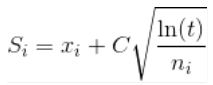

Introduction
Notes for computer engg. sem 6 SPPU university exam
PROGRESS
-
Artificial Intelligence
- Unit III Adversarial Search and Games
- Unit IV Knowledge
- Unit V Reasoning
- Unit VI Planning
- Prelim Questions
-
Cloud Computing
- Unit III Virtualization in Cloud Computing
- Unit IV Cloud Platforms and Cloud Applications
- Unit V Security in Cloud Computing
- Unit VI Advanced Techniques in Cloud Computing
- Prelim Questions
-
Data Science and Big Data
- Unit III Big Data Analytics Life Cycle
- Unit IV Predictive Big Data Analytics with Python
- Unit V Big Data Analytics and Model Evaluation
- Unit VI Data Visualization and Hadoop
- Prelim Questions
-
Web technologies
- Unit III Java Servlets and XML
- Unit IV JSP and Web Services
- Unit V Server Side Scripting Languages
- Unit VI Ruby and Rails
- Prelim Questions
BTW,
-
I have tried to keep notes as short as possible
-
Navigating through notes is pretty easy:
-
Sidebar can be toggled with the help of the hamburger menu in the top left corner.
-
Use the paint brush button to change the theme.
-
Search button for fast fuzzy search through the entire book.
-
-
Entire theory was based on google searches
-
If a topic seems like it needed more theory then a link to the resource was added. Look for "More Details" whenever necessary.
-
Improvements are welcome. Email me at: zim@onionmail.org
-
Source code for this book can be found at: https://github.com/zim0369/uniexam.
SYLLABI
Artificial Intelligence
-
Unit III Adversarial Search and Games
Game Theory, Optimal Decisions in Games, Heuristic Alpha–Beta Tree Search, Monte Carlo Tree Search, Stochastic Games, Partially Observable Games, Limitations of Game Search Algorithms, Constraint Satisfaction Problems (CSP), Constraint Propagation: Inference in CSPs, Backtracking Search for CSPs.
-
Unit IV Knowledge
Logical Agents, Knowledge-Based Agents, The Wumpus World, Logic, Propositional Logic: A Very Simple Logic, Propositional Theorem Proving, Effective Propositional Model Checking, Agents Based on Propositional Logic, First-Order Logic, Representation Revisited, Syntax and Semantics of First-Order Logic, Using First-Order Logic, Knowledge Engineering in First-Order Logic.
-
Unit V Reasoning
Inference in First-Order Logic, Propositional vs. First-Order Inference, Unification and First-Order Inference, Forward Chaining, Backward Chaining, Resolution, Knowledge Representation, Ontological Engineering, Categories and Objects, Events, Mental Objects, and Modal Logic, Reasoning Systems for Categories, Reasoning with Default Information
-
Unit VI Planning
Automated Planning, Classical Planning, Algorithms for Classical Planning, Heuristics for Planning, Hierarchical Planning, Planning and Acting in Nondeterministic Domains, Time, Schedules, and Resources, Analysis of Planning Approaches, Limits of AI, Ethics of AI, Future of AI, AI Components, AI Architectures.
Cloud Computing
-
Unit III Virtualization in Cloud Computing
Introduction: Definition of Virtualization, Adopting Virtualization, Types of Virtualization, Virtualization Architecture and Software, Virtual Clustering, Virtualization Application, Pitfalls of Virtualization. Grid, Cloud and Virtualization: Virtualization in Grid, Virtualization in Cloud, Virtualization and Cloud Security. Virtualization and Cloud Computing: Anatomy of Cloud Infrastructure, Virtual infrastructures, CPU Virtualization, Network and Storage Virtualization.
-
Unit IV Cloud Platforms and Cloud Applications
Amazon Web Services (AWS): Amazon Web Services and Components, Amazon Simple DB, Elastic Cloud Computing (EC2), Amazon Storage System, Amazon Database services (Dynamo DB).Microsoft Cloud Services: Azure core concepts, SQL Azure, Windows Azure Platform Appliance. Cloud Computing Applications: Healthcare: ECG Analysis in the Cloud, Biology: Protein Structure Prediction, Geosciences: Satellite Image Processing, Business and Consumer Applications: CRM and ERP, Social Networking, Google Cloud Application: Google App Engine. Overview of OpenStack architecture.
-
Unit V Security in Cloud Computing
Risks in Cloud Computing: Risk Management, Enterprise-Wide Risk Management, Types of Risks in Cloud Computing. Data Security in Cloud: Security Issues, Challenges, advantages, Disadvantages, Cloud Digital persona and Data security, Content Level Security. Cloud Security Services: Confidentiality, Integrity and Availability, Security Authorization Challenges in the Cloud, Secure Cloud Software Requirements, Secure Cloud Software Testing.
-
Unit VI Advanced Techniques in Cloud Computing
Future Tends in cloud Computing, Mobile Cloud, Automatic Cloud Computing: Comet Cloud. Multimedia Cloud: IPTV, Energy Aware Cloud Computing, Jungle Computing, Distributed Cloud Computing Vs Edge Computing, Containers, Docker, and Kubernetes, Introduction to DevOps. IOT and Cloud Convergence: The Cloud and IoT in your Home, The IOT and cloud in your Automobile, PERSONAL: IoT in Healthcare.
Data Science and Big Data
-
Unit III Big Data Analytics Life Cycle
Introduction to Big Data, sources of Big Data, Data Analytic Lifecycle: Introduction, Phase 1: Discovery, Phase 2: Data Preparation, Phase 3: Model Planning, Phase 4: Model Building, Phase 5: Communication results, Phase 6: Operation alize.
-
Unit IV Predictive Big Data Analytics with Python
Introduction, Essential Python Libraries, Basic examples. Data Preprocessing: Removing Duplicates, Transformation of Data using function or mapping, replacing values, Handling Missing Data. Analytics Types: Predictive, Descriptive and Prescriptive. Association Rules: Apriori Algorithm, FP growth. Regression: Linear Regression, Logistic Regression. Classification: Naïve Bayes, Decision Trees. Introduction to Scikit-learn, Installations, Dataset, mat plotlib, filling missing values, Regression and Classification using Scikit-learn.
-
Unit V Big Data Analytics and Model Evaluation
Clustering Algorithms: K-Means, Hierarchical Clustering, Time-series analysis. Introduction to Text Analysis: Text-preprocessing, Bag of words, TF-IDF and topics. Need and Introduction to social network analysis, Introduction to business analysis. Model Evaluation and Selection: Metrics for Evaluating Classifier Performance, Holdout Method and Random Sub sampling, Parameter Tuning and Optimization, Result Interpretation, Clustering and Time-series analysis using Scikit- learn, sklearn. metrics, Confusion matrix, AUC-ROC Curves, Elbow plot.
-
Unit VI Data Visualization and Hadoop
Introduction to Data Visualization, Challenges to Big data visualization, Types of data visualization, Data Visualization Techniques, Visualizing Big Data, Tools used in Data Visualization, Hadoop ecosystem, Map Reduce, Pig, Hive, Analytical techniques used in Big data visualization. Data Visualization using Python: Line plot, Scatter plot, Histogram, Density plot, Box- plot.
Web technologies
-
Unit III Java Servlets and XML
Servlet: Servlet architecture overview, A “Hello World” servlet, Servlets generating dynamic content, Servlet life cycle, parameter data, sessions, cookies, URL rewriting, other Servlet capabilities, data storage, Servlets concurrency, databases (MySQL) and Java Servlets. XML: XML documents and vocabularies, XML declaration, XML Namespaces, DOM based XML processing, transforming XML documents, DTD: Schema, elements, attributes. AJAX: Introduction, Working of AJAX.
-
Unit IV JSP and Web Services
JSP: Introduction to Java Server Pages, JSP and Servlets, running JSP applications, Basic JSP, JavaBeans classes and JSP, Support for the Model-View-Controller paradigm, JSP related technologies. Web Services: Web Service concepts, Writing a Java Web Service, Writing a Java web service client, Describing Web Services: WSDL, Communicating Object data: SOAP. Struts: Overview, architecture, configuration, actions, interceptors, result types, validations, localization, exception handling, annotations.
-
Unit V Server Side Scripting Languages
PHP: Introduction to PHP, uses of PHP, general syntactic characteristics, Primitives, operations and expressions, output, control statements, arrays, functions, pattern matching, form handling, files, cookies, session tracking, using MySQL with PHP, WAP and WML. Introduction to ASP.NET: Overview of the .NET Framework, Overview of C#, Introduction to ASP.NET, ASP.NET Controls, Web Services. Overview of Node JS.
-
Unit VI Ruby and Rails
Introduction to Ruby: Origins & uses of Ruby, scalar types and their operations, simple input and output, control statements, fundamentals of arrays, hashes, methods, classes, code blocks and iterators, pattern matching. Introduction to Rails: Overview of Rails, Document Requests, Processing Forms, Rails Applications and Databases, Layouts, Rails with Ajax. Introduction to EJB.
Artificial Intelligence
Adversarial Search and Games
Adversarial Search
Adversarial search is a search, where we examine the problem which arises when we try to plan ahead of the world and other agents are planning against us.
The environment with more than one agent is termed as multi-agent environment, in which each agent is an opponent of other agent and playing against each other. Each agent needs to consider the action of other agent and effect of that action on their performance.
Searches in which two or more players with conflicting goals are trying to explore the same search space for the solution, are called adversarial searches, often known as Games.
Games are modeled as a Search problem and heuristic evaluation function, and these are the two main factors which help to model and solve games in AI.
Game Theory
Game theory is the study of mathematical models of strategic interactions among rational agents. It has applications in all fields of social science, as well as in logic, systems science and computer science.
-
Types of Games:
- Zero-Sum and Non-Zero Sum Games
- Simultaneous and Sequential Games
- Imperfect Information and Perfect Information Games
- Asymmetric and Symmetric Games
- Co-operative and Non-Co-operative Games
Optimal Decisions in Games
Games are usually intriguing because they are difficult to solve. Chess, for example, has an average branching factor of around 35, and games frequently stretch to 50 moves per player, therefore the search tree has roughly 35100 or 10154 nodes (despite the search graph having “only” about 1040 unique nodes). As a result, games, like the real world, necessitate the ability to make some sort of decision even when calculating the best option is impossible.
-
The optimal strategy can be found from the minimax value of each node, which we express as MINIMAX, given a game tree (n). Assuming that both players play optimally from there through the finish of the game, the utility (for MAX) of being in the corresponding state is the node's minimax value.
Heuristic Alpha–Beta Tree Search
Alpha-beta pruning is a modified version of the minimax algorithm. It is an optimization technique for the minimax algorithm.
-
The two-parameter can be defined as:
- Alpha: The best (highest-value) choice we have found so far at any point along the path of Maximizer. The initial value of alpha is -∞.
- Beta: The best (lowest-value) choice we have found so far at any point along the path of Minimizer. The initial value of beta is +∞.
-
The Alpha-beta pruning to a standard minimax algorithm returns the same move as the standard algorithm does, but it removes all the nodes which are not really affecting the final decision but making algorithm slow. Hence by pruning these nodes, it makes the algorithm fas
-
The main condition which required for alpha-beta pruning is: α>=β
Monte Carlo Tree Search
Monte Carlo tree search is a heuristic search algorithm for some kinds of decision processes, most notably those employed in software that plays board games. In that context MCTS is used to solve the game tree.
-
MCTS can be broken down into 4 steps:
-
Selection: In this process, the MCTS algorithm traverses the current tree from the root node using a specific strategy. The strategy uses an evaluation function to optimally select nodes with the highest estimated value.

where:
- Si = value of a node i
- xi = empirical mean of a node i
- C = a constant
- t = total number of simulations
-
Expansion: In this process, a new child node is added to the tree to that node which was optimally reached during the selection process.
-
Simulation: In this process, a simulation is performed by choosing moves or strategies until a result or predefined state is achieved.
-
Backpropagation: After determining the value of the newly added node, the remaining tree must be updated. During the process, the number of simulation stored in each node is incremented. Also, if the new node’s simulation results in a win, then the number of wins is also incremented.
-
Stochastic Game
-
In game theory, a stochastic game, is a repeated game with probabilistic transitions played by one or more players. The game is played in a sequence of stages. At the beginning of each stage the game is in some state.
Partially Observable Games,
-
A partially observable system is one in which the entire state of the system is not fully visible to an external sensor. In a partially observable system the observer may utilise a memory system in order to add information to the observer's understanding of the system.
-
Example: A card game in which some of the cards are discarded into a pile face down. In this case the observer is only able to view their own cards and potentially those of the dealer.
Limitations of Game Search Algorithms,
Knowledge
Adversarial Search and Games
Knowledge
Questions
These questions are the questions from SKN's recent(May 2022) prelim examinations
Cloud Computing
Unit III: Virtualization in Cloud Computing
- Virtualization is technology that lets you create useful IT services using resources that are traditionally bound to hardware. It allows you to use a physical machine's full capacity by distributing its capabilities among many users or environments.02
Adopting Virtualization
-
Some users may confuse virtualization with cloud computing, but they’re not entirely the same.
-
Virtualization is the creation of a virtual resource such as a server, desktop, operating system, file, storage space, or network to help businesses manage and scale workloads.
-
Cloud computing is the sharing of resources, software, applications and data as a service. Together, the two can be used to provide even greater advantages.
-
-
Data virtualization is viable for small businesses.
-
While virtualization was first embraced by enterprise operations, it soon became clear that the same value proposition held substantial benefits for Small to Medium Businesses (SMBs). Cyberattacks and natural disasters can hit businesses of all sizes. For SMBs, backing up a virtualized infrastructure can be a more viable option to backing up hardware servers.
-
Reasons to adopt virtualization:
- Increased agility for the business
- Better resource deployment
- Greater operational efficiency
- Enhanced security
- Higher availability
- Stronger disaster recovery
- Improved quality of service
- Reduced energy consumption
- Preparation for the cloud
Types of Virtualization
- The 7 Types of Virtualization
- OS Virtualization—aka Virtual Machines
- Application-Server Virtualization
- Application Virtualization
- Administrative Virtualization
- Network Virtualization
- Hardware Virtualization
- Storage Virtualization
Virtualization architecture & software
Virtualization architecture
-
A virtualization architecture is a conceptual model specifying the arrangement and interrelationships of the particular components involved in delivering a virtual -- rather than physical -- version of something, such as an operating system (OS), a server, a storage device or network resources.

Left: Traditional architecture | Right: Virtual architecture
Virtualization software
-
Virtualization software, also called hypervisor, allows a single host computer to create and run one or more virtual environments.
-
Virtualization software is most often used to emulate a complete computer system in order to allow a guest operating system to be run, for example allowing Linux to run as a guest on top of a PC that is natively running a Microsoft Windows operating system (or the inverse, running Windows as a guest on Linux).
-
Uses of virtualization software:
- Back up: You can backup your entire operating system or server installation as a virtual OS.
- Run a different OS: Let's say you want to try out Linux without having to install it on a physical hard drive.
- Run ancient apps: Say an application you want to run only works on win8 and you're using win10 then instead of reinstalling an outdated OS on real hardware why not just install windows 8 in a VM.
- Look at dirty files: Taking a look at malicious files might put your computer and your data at risk so it would be better to check it in a sandboxed environment.
- Using sandboxed browsers: Hackers have successfully exploited all four of most popular browsers — Chrome, Internet Explorer, Firefox, and Safari. Browser plugins can be malicious too. In this case using a sandboxed browser like the TOR browser is safer.
- Try an application: You just want to check if an application you wrote works well on multiple operating systems then using virtual machines would be more convenient as compared to installing on real hardware.
Virtual Clustering
-
Virtual cluster is a many-to-one virtualization technology, which can form a routing system from multiple common devices connected through a switching network, while performing the same as a single logical router to all external appearances.
Virtual Applications
-
Virtual apps are applications that are optimized to run in a virtual environment. Simply put, a virtual app simply runs on a computer without being installed on it.
-
Remote apps are a popular virtual app delivery solution wherein the virtual applications installed on a server are delivered to users’ devices. These applications are not installed on the user’s device; instead, software called a client is installed on the device that connects to the server, and the application is presented as screenshots sent to the device.
-
ThinApp is an example of an agentless application virtualization solution, while Microsoft App-V represents an agent-based virtual app solution. Parallels Remote Application Server, Citrix, and VMware are the leading providers of application virtualization solutions in the market.
Pitfalls of Virtualization
Have added both pros and cons
-
Pros
- Cheaper
- Predictable costs
- reduced workload
- Better uptime
- Faster deployment of resources
- Promotes digital entrepreneurship
- Energy savings
-
Cons(pitfalls)
- High implementation cost
- Has limitations
- Security risk
- Availability issue
- Scalability issue
- Requires several links in a chain that must work together cohesively
- Time consuming
Grid, Cloud & Virtualization
Grid Computing
-
Grid Computing can be defined as a network of computers working together to perform a task that would rather be difficult for a single machine. All machines on that network work under the same protocol to act as a virtual supercomputer.
-
The task that they work on may include analyzing huge datasets or simulating situations that require high computing power.
-
Computers on the network contribute resources like processing power and storage capacity to the network.
-
Grid computing is also called as "distributed computing." It links multiple computing resources (PC's, workstations, servers, and storage elements) together and provides a mechanism to access them.
-
The main advantages of grid computing are that it increases user productivity by providing transparent access to resources, and work can be completed more quickly.
Cloud
Virtualization
Virtualization in Grid
Virtualization in Cloud
-
Virtualization plays a very important role in the cloud computing technology, normally in the cloud computing, users share the data present in the clouds like application etc, but actually with the help of virtualization users shares the Infrastructure.
-
The main usage of Virtualization Technology is to provide the applications with the standard versions to their cloud users, suppose if the next version of that application is released, then cloud provider has to provide the latest version to their cloud users and practically it is possible because it is more expensive.
-
To overcome this problem we use basically virtualization technology, By using virtualization, all severs and the software application which are required by other cloud providers are maintained by the third party people, and the cloud providers has to pay the money on monthly or annual basis.
-
Types of Virtualization in Cloud Computing
- Operating System Virtualization
- Hardware Virtualization
- Server Virtualization
- Storage Virtualization
Virtualization and Cloud Security.
-
Cloud security, also known as cloud computing security, is a collection of security measures designed to protect cloud-based infrastructure, applications, and data. These measures ensure user and device authentication, data and resource access control, and data privacy protection. They also support regulatory data compliance. Cloud security is employed in cloud environments to protect a company's data from distributed denial of service (DDoS) attacks, malware, hackers, and unauthorized user access or use.
-
Types of clouds
- Public
- Private
- Hybrid
-
Cloud security is critical since most organizations are already using cloud computing in one form or another. This high rate of adoption of public cloud services is reflected in Gartner’s recent prediction that the worldwide market for public cloud services will grow 23.1% in 2021.
-
Virtualized security, or security virtualization, refers to security solutions that are software-based and designed to work within a virtualized IT environment. This differs from traditional, hardware-based network security, which is static and runs on devices such as traditional firewalls, routers, and switches.
Virtualization and Cloud Computing
Anatomy of Cloud Infrastructure
-
Anatomy of Cloud Computing
-
Provisioning and Configuration Module: It is the lowest level of cloud and typically resides on bare hardware (as a firmware) or on the top of the hypervisor layer. Its function is to abstract the underlying hardware and provide a standard mechanism to spawn instance of virtual machine on demand. It also handles the post-configuration of the operating systems and applications residing on the VM
-
Monitoring and Optimization: This layer handles the monitoring of all services, storage, networking and applications components in cloud. Based on the statistics, it could perform routine functions that optimize the behavior of the infrastructure components and provide relevant data to the cloud administrator to further optimize the configuration for maximum utilization and performance,
-
Metering and Chargeback: This layer provides functions to measure the usage of resources in cloud. The metering module collects all the utilization data per domain per use. This module gives the cloud administrator enough data to measure ongoing utilization of resources and to create invoices based on the usage on a periodic basis.
-
Orchestration: Orchestration is a central to cloud operations. Orchestration converts requests from the service management layer and the monitoring, chargeback modules to appropriate action item which are then submitted to provisioning and configuration module for final closure. Orchestration updates the CMDB in the process.
-
Configuration Management Database (CMDB): It is a central configuration repository wherein all the meta data and configuration of different modules, resources are kept and updated in the real-time basis. The repository can then be accessed using standards protocols like SOAP by third-party software and integration components. All updates in CMDB happen in real time as requests get processed in cloud.
-
Cloud Life cycle Management Layer (CLM): This layer handles the coordination of all other layers in cloud. All requests internal and external are addressed to the CLM layer first. CLM may internally route requests and actions to other layers for further processing.
-
Service Catalog: It is central to the definition of cloud, SC defines what kind of services the cloud is capable of providing and at what cost to the end user. SC is the first thing that is drafted before a cloud is architecture. The service management layer consults SC before it processes any request for a new resource.
-
Virtual infrastructures
- A virtual infrastructure allows you to utilise the IT capabilities of physical resources as software that can be used across multiple platforms. These resources are shared across multiple virtual machines (VMs) and applications for maximum efficiency, creating a virtual infrastructure.
CPU Virtualization
- CPU Virtualization is a hardware feature found in all current AMD & Intel CPUs that allows a single processor to act as if it was multiple individual CPUs.This allows an operating system to more effectively & efficiently utilize the CPU power in the computer so that it runs faster.
Network and Storage Virtualization.
Network Virtualization
Network virtualization is a method of combining the available resources in a network to consolidate multiple physical networks, divide a network into segments or create software networks between virtual machines (VMs).
Storage Virtualization
Storage virtualization in Cloud Computing is nothing but the sharing of physical storage into multiple storage devices which further appears to be a single storage device. It can be also called as a group of an available storage device which simply manages from a central console.
Unit IV: Cloud Platforms and Cloud Applications
Amazon Web Services (AWS): Amazon Web Services and Components
- Amazon Web Services, Inc. is a subsidiary of Amazon that provides on-demand cloud computing platforms and APIs to individuals, companies, and governments, on a metered pay-as-you-go basis. These cloud computing web services provide distributed computing processing capacity and software tools via AWS server farms.
AWS Services

- Amazon Web Services offer the following services for various computing
purposes:
- Hosting a web site
- Social networking
- Academic computing
- Sharing media
- Hosting applications
- Backup, storage, and disaster recovery
- Media distribution and content delivery
- Developing and testing environments
- Search engines
AWS Components
-
Data Management and Data Transfer: To run HPC applications in the AWS cloud, you need to move the required data into the cloud. There are several data transport solutions designed to securely transfer huge amounts of data. This overcomes issues like a long time for transfer, high network costs, and security concerns. Also, you can automate the movement of data between the AWS cloud and on-premises storage. There are options for establishing a private connection to the AWS from your premises. This increases bandwidth to provide more throughput, reduces the cost of the network, and provides a consistent network experience.
-
Compute & Networking: There are several compute instances types that can be customized according to your needs. It also handles monitoring your application and adjusting its capacity for maintaining a steady and predictable performance at an affordable cost. Also, setting up application scaling across multiple services for multiple resources takes a few minutes. Enhanced networking options from AWS allow achieving lower inter-instance latency and higher bandwidth.
-
Storage: When looking for an HPC solution, you need to consider the storage options and cost. There are several flexible blocks, object, and file storage options in AWS services that allow permanent and transient data storage. It allows allocating storage volumes according to the size you need. You can store and access and data type over the cloud without doing a data migration project. Also, with AWS services, you can transfer your workload to the cloud from on-premises.
-
Automation and Orchestration: For using the infrastructure efficiently, you need to automate scheduling submitted jobs and the job submission process. AWS services allow you to run thousands of batch computing jobs through the dynamic provision of the computer resources on the basis of the requirements.
-
Operations and Management: As a system administrator, you are responsible for avoiding cost overruns and monitoring the infrastructure. There are several management and monitoring services that allow you to optimize utilization of resources, monitor the application, get a complete view of operational health, and respond to the performance changes.
-
Visualization: With the AWS services, you can easily visualize the engineering simulations’ results without moving huge amounts of data. Now, you can access the interactive applications remotely over a standard network and deliver application sessions to any workstation.
-
Security and Compliance: For running applications on the cloud, you need to have an understanding of regulatory compliance and security management. There are several quick-launch templates and security related services offered by AWS that helps in protecting data and customer privacy by putting strong safeguards in the AWS infrastructure.
Amazon Simple DB
-
Amazon SimpleDB is a distributed database written in Erlang by Amazon.com. It is used as a web service in concert with Amazon Elastic Compute Cloud and Amazon S3 and is part of Amazon Web Services.
Elastic Cloud Computing (EC2)
-
Amazon Elastic Compute Cloud is a part of Amazon.com's cloud-computing platform, Amazon Web Services, that allows users to rent virtual computers on which to run their own computer applications.
Amazon Storage System
-
Amazon Simple Storage Service (Amazon S3) is an object storage service that offers industry-leading scalability, data availability, security, and performance.
Amazon Database services (Dynamo DB).
-
Amazon DynamoDB is a fully managed proprietary NoSQL database service that supports key–value and document data structures and is offered by Amazon.com as part of the Amazon Web Services portfolio. DynamoDB exposes a similar data model to and derives its name from Dynamo, but has a different underlying implementation.
Microsoft Cloud Services
- Microsoft Azure, often referred to as Azure, is a cloud computing service operated by Microsoft for application management via Microsoft-managed data centers.
Azure core concepts
| Concept Name | Description |
|---|---|
| Regions | Azure is a global cloud platform which is available across various regions around the world. When you request a service, application, or VM in Azure, you are first asked to specify a region. The selected region represents datacenter where your application runs. |
| Datacenter | In Azure, you can deploy your applications into a variety of data centers around the globe. So, it is advisable to select a region which is closer to most of your customers. It helps you to reduce latency in network requests. |
| Azure portal | The Azure portal is a web-based application which can be used to create, manage and remove Azure resource and services. It is located at https://portal.azure.com. |
| Resources | Azure resource is an individual computer, networking data or app hosting services which charged individually. Some common resources are virtual machines( VM), storage account, or SQL databases. |
| Resource groups | An Azure resource group is a container which holds related resource for an Azure solution. It may include every resource or just resource which you wants to manage. |
| Resource Manager templates | It is a JSON which defines one or more resource to deploy to a resource group. It also establishes dependencies between deployed resources. |
| Automation: | Azure allows you to automate the process of creating, managing and deleting resource by using PowerShell or the Azure command-line Interface(CLI). |
| Azure PowerShell | PowerShell is a set of modules that offer cmdlets to manage Azure. In most cases, you are allowed to use, the cmdlets command for the same tasks which you are performing in the Azure portal. |
| Azure command-line interface(CLI) | The Azure CLI is a tool that you can use to create, manage, and remove Azure resources from the command line. |
| REST APIs | Azure is built on a set of REST APIs help you perform the same operation that you do in Azure portal Ul. It allows your Azure resources and apps to be manipulated via any third party software application. |
SQL Azure
-
Microsoft Azure SQL Database is a managed cloud database provided as part of Microsoft Azure. A cloud database is a database that runs on a cloud computing platform, and access to it is provided as a service. Managed database services take care of scalability, backup, and high availability of the database.
Windows Azure Platform Appliance.
-
The Windows Azure Platform Appliance consists of Windows Azure, SQL Azure and a Microsoft-specified configuration of network, storage and server hardware. Service providers, governments and large enterprises who would, for example, invest in a 1000 servers at a time, will be able to deploy the Windows Azure platform on their own hardware in their datacenter. Microsoft Windows Azure Platform Appliance is optimized for scale out applications - such as eBay- and datacenter efficiency across hundreds to thousands to tens-of-thousands servers.
Cloud Computing Applications:
-
Cloud service providers provide various applications in the field of art, business, data storage and backup services, education, entertainment, management, social networking, etc.
Healthcare
ECG Analysis in the Cloud
- ECG analysis in cloud computing: cloud computing technologies allows the remote monitoring of a patient's heart beat data. Through this way the patient at risk can be constantly monitored without going to the hospital for ECG analysis. At the same time the Doctor's can instantly be notified with cases that need's their attention.
Biology
Protein Structure Prediction
-
Cloud computing is an emerging technology that provides various computing services on demand. It provides convenient access to a shared pool of higher-level services and other system resources. Nowadays, cloud computing has a great significance in the fields of geology, biology, and other scientific research areas.
-
Protein structure prediction is the best example in research area that makes use of cloud applications for its computation and storage.
-
A protein is composed of long chains of amino acids joined together by peptide bonds. The various structures of protein help in the designing of new drugs and the various sequences of proteins from its three-dimensional structure in predictive form is known as a Protein structure prediction.
-
Firstly primary structures of proteins are formed and then prediction of the secondary, tertiary and quaternary structures are done from the primary one. In this way predictions of protein structures are done. Protein structure prediction also makes use of various other technologies like artificial neural networks, artificial intelligence, machine learning and probabilistic techniques, also holds great importance in fields like theoretical chemistry and bioinformatics.
-
There are various algorithms and tools that exists for protein structure prediction. CASP (Critical Assessment of Protein Structure Prediction) is a well-known tool that provides methods for automated web servers and the results of research work are placed on clouds like CAMEO (Continuous Automated Model Evaluation) server. These servers can be accessed by anyone as per their requirements from any place. Some of the tools or servers used in protein structure prediction are Phobius, FoldX, LOMETS, Prime, Predict protein, SignalP, BBSP, EVfold, Biskit, HHpred, Phre, ESyired3D. Using these tools new structures are predicted and the results are placed on the cloud-based servers.
Geosciences
- Earth science or geoscience includes all fields of natural science related to the planet Earth.
Satellite Image Processing,
-
Satellite Image Processing is an important field in research and development and consists of the images of earth and satellites taken by the means of artificial satellites. Firstly, the photographs are taken in digital form and later are processed by the computers to extract the information. Statistical methods are applied to the digital images and after processing the various discrete surfaces are identified by analyzing the pixel values.
-
Majorly there are four kinds of resolutions associated with satellite imagery. These are:
- Spatial resolution: It is determined by the sensors Instantaneous Field of View(IFoV) and is defined as the pixel size of an image that is visible to the human eye being measured on the ground. Since it has high resolving power or the ability to separate and hence is termed as Spatial Resolution.
- Spectral resolution: This resolution measures the wavelength internal size and determines the number of wavelength intervals that the sensor measures.
- Temporal resolution: The word temporal is associated with time or days and is defined as the time that passes between various imagery cloud periods.
- Radiometric resolution: This resolution provides the actual characteristics of the image and is generally expressed in bits size. It gives the effective bit depth and records the various levels of brightness of imaging system.
Business and Consumer Applications
CRM and ERP
-
CRM (Customer Relationship Management) and ERP (Enterprise Resource Planning) software are powerful tools for a business or enterprise to use. CRM handles the sales, marketing, and customer service information.
Social Networking
-
Social networks help boost internet usability by storing heavy multimedia content in cloud storage systems. Videos and photographs are the most popular content on social media, which essentially use up the maximum space allocated to them. They have the capacity to slow down applications and servers with all of their resource demands. Cloud computing vendors such as Salesforce and Amazon nowadays provide varied services including Customer Relationship Management (CRM) and Enterprise Resource Planning (ERP). As they deliver these things through cloud servers, clients can use the flexibility and scalability of the system without purchasing standalone software or hardware.
-
Apart from data storage, the social networks are now also using clouds for various other tasks. For example, this can be ideal for big data analytics. One of the benefits of using cloud systems is that users can access vast amount of structured and even non-structured data easily. Just take a look at the much-improved analytics provided by sites like Facebook, especially for its business users.
-
Another way cloud computing becomes helpful is by reducing the cost of data backup and recovery in case of a disaster. If the data is only stored in one central location, it becomes much riskier. If something happens there, it is almost impossible to recover the data. But through cloud they remain accessible through shared resources across the globe. This is especially useful for social networks as the store personal data of its users, and so cannot afford to lose even one part of it.
Google Cloud Application
- Google Cloud Platform, offered by Google, is a suite of cloud computing services that runs on the same infrastructure that Google uses internally for its end-user products, such as Google Search, Gmail, Google Drive, and YouTube.
Google App Engine.
-
Google App Engine is a cloud computing platform as a service for developing and hosting web applications in Google-managed data centers. Applications are sandboxed and run across multiple servers.
Overview of OpenStack architecture.
-
OpenStack is a free, open standard cloud computing platform. It is mostly deployed as infrastructure-as-a-service in both public and private clouds where virtual servers and other resources are made available to users.
-
OpenStack contains a modular architecture along with several code names for the components.

Unit V: Security in Cloud Computing
Risks in Cloud Computing
Risk Management
-
Risk management is one of the cloud computing environment controls which aims to assess and manage risks related to cloud computing and to prevent those risks from impacting.
-
The risk-based approach of managing information systems is a holistic activity that needs to be fully integrated into every aspect of the organization, from planning to system development life cycle processes, to security controls allocation and continuous monitoring. Therefore, a Risk Management Framework (RMF) provides a disciplined and structured process that integrates information security and risk management activities into the system development life cycle. An RMF operates primarily at tier 3 in the risk management hierarchy, but it can also have interactions at tier 1 and tier 2.
Enterprise-Wide Risk Management
-
Enterprise-wide risk management (ERM) is a process of coordinated risk management that places greater emphasis on co-operation among departments to manage an organisation's range of risks as a whole. ERM offers a framework to effectively manage uncertainty, respond to risk and exploit opportunities as they arise.
-
Five steps to ERM are:
- Identify Risk
- Analyze Risk
- Evaluate or Rank Risk
- Treat Risk or Control Risk
- Monitor and Review Risk
Types of Risks in Cloud Computing
-
Data Loss: Data loss is the most common cloud security risks of cloud computing. It is also known as data leakage. Data loss is the process in which data is being deleted, corrupted, and unreadable by a user, software, or application. In a cloud computing environment, data loss occurs when our sensitive data is somebody else's hands, one or more data elements can not be utilized by the data owner, hard disk is not working properly, and software is not updated.
-
Hacked Interfaces and Insecure APIs: As we all know, cloud computing is completely depends on Internet, so it is compulsory to protect interfaces and APIs that are used by external users. APIs are the easiest way to communicate with most of the cloud services. In cloud computing, few services are available in the public domain. These services can be accessed by third parties, so there may be a chance that these services easily harmed and hacked by hackers.
-
Data Breach: Data Breach is the process in which the confidential data is viewed, accessed, or stolen by the third party without any authorization, so organization's data is hacked by the hackers.
-
Vendor lock-in: Vendor lock-in is the of the biggest security risks in cloud computing. Organizations may face problems when transferring their services from one vendor to another. As different vendors provide different platforms, that can cause difficulty moving one cloud to another.
-
Increased complexity strains IT staff: Migrating, integrating, and operating the cloud services is complex for the IT staff. IT staff must require the extra capability and skills to manage, integrate, and maintain the data to the cloud.
-
Spectre & Meltdown: Spectre & Meltdown allows programs to view and steal data which is currently processed on computer. It can run on personal computers, mobile devices, and in the cloud. It can store the password, your personal information such as images, emails, and business documents in the memory of other running programs.
-
Denial of Service (DoS) attacks: Denial of service (DoS) attacks occur when the system receives too much traffic to buffer the server. Mostly, DoS attackers target web servers of large organizations such as banking sectors, media companies, and government organizations. To recover the lost data, DoS attackers charge a great deal of time and money to handle the data.
-
Account hijacking: Account hijacking is a serious security risk in cloud computing. It is the process in which individual user's or organization's cloud account (bank account, e-mail account, and social media account) is stolen by hackers. The hackers use the stolen account to perform unauthorized activities.
Data Security in Cloud
- The core principles of information security and data governance—data
confidentiality, integrity, and availability (known as the CIA triad)—also
apply to the cloud:
- Confidentiality: protecting the data from unauthorized access and disclosure
- Integrity: safeguard the data from unauthorized modification so it can be trusted
- Availability: ensuring the data is fully available and accessible when it’s needed
Security Issues
-
Data Loss: Data Loss is one of the issues faced in Cloud Computing. This is also known as Data Leakage. As we know that our sensitive data is in the hands of Somebody else, and we don’t have full control over our database. So if the security of cloud service is to break by hackers then it may be possible that hackers will get access to our sensitive data or personal files.
-
Interference of Hackers and Insecure API’s: As we know if we are talking about the cloud and its services it means we are talking about the Internet. Also, we know that the easiest way to communicate with Cloud is using API. So it is important to protect the Interface’s and API’s which are used by an external user. But also in cloud computing, few services are available in the public domain. An is the vulnerable part of Cloud Computing because it may be possible that these services are accessed by some third parties. So it may be possible that with the help of these services hackers can easily hack or harm our data.
-
User Account Hijacking: Account Hijacking is the most serious security issue in Cloud Computing. If somehow the Account of User or an Organization is hijacked by Hacker. Then the hacker has full authority to perform Unauthorized Activities.
-
Changing Service Provider: Vendor lock In is also an important Security issue in Cloud Computing. Many organizations will face different problems while shifting from one vendor to another. For example, An Organization wants to shift from AWS Cloud to Google Cloud Services then they ace various problem’s like shifting of all data, also both cloud services have different techniques and functions, so they also face problems regarding that. Also, it may be possible that the charges of AWS are different from Google Cloud, etc.
-
Lack of Skill: While working, shifting o another service provider, need an extra feature, how to use a feature, etc. are the main problems caused in IT Company who doesn’t have skilled Employee. So it requires a skilled person to work with cloud Computing.
-
Denial of Service (DoS) attack: This type of attack occurs when the system receives too much traffic. Mostly DoS attacks occur in large organizations such as the banking sector, government sector, etc. When a DoS attack occurs data is lost. So in order to recover data, it requires a great amount of money as well as time to handle it.
Challenges
-
DDoS and Denial-of-Service Attacks: As more and more businesses and operations move to the cloud, cloud providers are becoming a bigger target for malicious attacks. Distributed denial of service (DDoS) attacks are more common than ever before. Verisign reported IT services, cloud platforms (PaaS) and SaaS was the most frequently targeted industry during the first quarter of 2015.
-
Data breaches: Known data breaches in the U.S. hit a record-high of 738 in 2014, according to the Identity Theft Research Center, and hacking was (by far) the number one cause. That’s an incredible statistic and only emphasizes the growing challenge to secure sensitive data.
-
Data loss: When business critical information is moved into the cloud, it’s understandable to be concerned with its security. Losing cloud data, either through accidental deletion and human error, malicious tampering including the installation of malware (i.e. DDoS), or an act of nature that brings down a cloud service provider, could be disastrous for an enterprise business. Often a DDoS attack is only a diversion for a greater threat, such as an attempt to steal or delete data.
-
Insecure access control points: One of the great benefits of the cloud is it can be accessed from anywhere and from any device. But, what if the interfaces and particularly the application programming interfaces (APIs) users interact with aren’t secure? Hackers can find and gain access to these types of vulnerabilities and exploit authentication via APIs if given enough time.
-
Notifications and alerts: Awareness and proper communication of security threats is a cornerstone of network security and the same goes for cloud computing security. Alerting the appropriate website or application managers as soon as a threat is identified should be part of a thorough data security and access management plan. Speedy mitigation of a threat relies on clear and prompt communication so steps can be taken by the proper entities and impact of the threat minimized.
Advantages
-
24×7 Visibility: The best cloud security solutions like AppTrana enable 24×7 monitoring of the application and cloud-based assets. This helps organizations to have continuous visibility into their risk posture and its impact on the business.
-
Higher Availability: Cloud computing security solutions typically have built-in redundancies to ensure that the application/ resources are always available. The CDNs used have distributed global networks of edge servers that deliver content optimally, accelerate application performance, and minimize access to the server. Together, they handle traffic surges in a way that on-premises/ hardware solutions cannot.
-
Effective protection against DDoS Attacks: Cloud security solutions provide the most effective protection against DDoS attacks, which are increasing in numbers, magnitude, sophistication, and severity. Cloud computing security helps to continuously monitor, identify, analyze, and mitigate DDoS attacks. The built-in redundancies, customizability, flexibility, scalability, and intelligence of such solutions can prevent volumetric, low, and slow attacks.
-
Data Security: The best cloud computing security solutions provide data security by design. They have security protocols and policies such as strong access controls and data encryption to prevent unauthorized entities from accessing confidential information.
-
Pay as you Go Model: The cloud security model ensures that you pay only for what you use and consume as opposed to making any upfront investment.
-
Advanced Threat Detection: By using end-point scanning and global threat intelligence, cloud computing security can detect threats more easily.
-
Regulatory Compliance: Top-notch cloud application security providers help to ensure regulatory standards and industry-specific compliance needs. This is done through its enhanced infrastructure and managed security services.
Disadvantages
-
Risk of data confidentiality: There is always a risk that user data can be accessed by other people. So data and cloud protection must be good because if it won’t be dangerous for data confidentiality.
-
Depends on internet connection: The internet is the only way to cloud computing. When there is no internet connection in your place, or the internet path to the cloud provider is in trouble, automatically access to your cloud computing machine will be disconnected. Now this is where the biggest obstacle is happening in developing countries and remote areas that do not have good internet access.And the weakness of public cloud is where everyone accesses the same server and server and will increase the risk of attack, and down the server.
-
The level of security: Secrecy and security are among the most doubtful things in cloud computing. By using a cloud computing system means we are fully entrusted with the security and confidentiality of data to companies that provide cloud computing servers. When you experience a problem, you cannot sue the server for errors in the data. When you experience a problem, you cannot sue the server for errors in the data.
-
Compliance: Which refers to the risk of a level compliance deviation from the provider against the regulations applied by the user.
-
Vulnerable in the event of an attack: There are lots of arguments against cloud computing one of which is computing because the Cloud Computing work system is online, each component that is on Cloud Computing can be exposed to a wide range, this is a wide open opportunity for attacks on data or activities stored on the server. When an attack is carried out by hackers, the problems that occur are data security, and data privacy.
-
Data Mobility: which refers to the possibility of sharing data between cloud services and how to retrieve data if one day the user makes a process of terminating cloud computing services.And there is local storage where the data can be used at any time as needed.
-
Technical problem: Besides that the use of Cloud Computing makes you unable to manage it yourself when there is a problem or a problem, you must contact customer support who is not necessarily ready 24/7. This is a problem because for some support you also have to pay more money.
-
Low Connection: Does not work well if the connection is slow. The quality of cloud computing servers is one of the most important considerations before we decide to provide cloud computing server service providers. When the server is down or the permorma is not good, we will be harmed because of poor server quality.
Cloud Digital persona and Data security
Content Level Security
- Content Level Security (CLS) is a feature that controls who has access to edit or read content. During the process of creating a document, the content goes through several stages. Each stage requires input from users with different roles.
Cloud Security Services
-
Identity and access: You are provided with control for secured management of identities and access. It includes people, processes and systems used for managing access to your enterprise resources. It is managed by making sure that the identity of the user is verified and the access rights are provided at the correct level.
-
Data loss prevention: This service offers protection of data by providing you with pre-installed data loss prevention software, along with a set of rules deployed.
-
Web security: Web security is provided as an additional protection against malware from entering the enterprise through web browsing and other such activities. This cloud service is provided either by installing a software or an appliance or through the cloud by redirecting your web traffic over to the cloud provider.
-
E-mail security: It provides control over the in-bound and out-bound e-mails to protect your organization from malicious attachments and phishing. This cloud service helps enforce corporate policies such as acceptable use, spam and in providing business continuity options. One of the solution adopted by many cloud e-mail security services is digital signatures, which allows identification and non-repudiation.
-
Security assessment: There are various tools implemented for the users of the SaaS delivery model, such as variant elasticity, low administration overhead, negligible setup time and pay-per use with low investment in the initial stage.
-
Intrusion management: It is the process that uses pattern recognition for detection and reaction to events that are statistically unusual and unexpected. It may also require reconfiguration of your system components in real time so as to prevent an intrusion.
-
Security information and managing events: Your system gathers information related to log and events. This information is used in correlating and analyzing, to provide you with real time reporting and alerts on events that require intervention.
-
Encryption: There are typical algorithms that are computationally difficult or nearly impossible to break.
-
Disaster management: This cloud service helps in continuing your business and managing disasters by providing flexibility and reliable failover for services that are required in case of service interruptions.
-
Network security: The network security services provides you with address security controls, which in a cloud environment is generally provided through virtual devices.
Confidentiality
- Data confidentiality is the process of protecting data from illegal access and disclosure from the outsourced server and unauthorized users. This is done by encrypting the data so that only the authorized users can decrypt it.
Integrity and Availability
-
Integrity: Protect the data from the unauthorized insert, update, or delete. The data owner and authorized users should be able to recognize if the data is corrupted or incomplete, and receive the most recent updated version of the data, which guarantees accuracy and consistency of data.
-
Availability: The data in the cloud servers should be accessible to its users. Major threats to availability are denial of service (DOS) attacks, natural disasters, and equipment failures at the service provider’s end.
Security Authorization Challenges in the Cloud
Secure Cloud Software Requirements
-
Top-of-the-Line Perimeter Firewall: Most firewalls are very simple—they typically inspect a packet’s source and destination and that’s all. Some more advanced firewalls feature stable packet inspection, which checks the integrity of the file packets for stability issues prior to approving or rejecting the packet.
-
Intrusion Detection Systems with Event Logging: Numerous IT security compliance standards require businesses to have a means of tracking and recording intrusion attempts. So, for any business that wants to meet compliance standards such as PCI or HIPAA, using IDS event logging solutions is a must.
-
Internal Firewalls for Individual Applications, and Databases: While having a strong perimeter firewall can block external attacks, internal attacks are still a major threat. Infrastructures that lack internal firewalls to restrict access to sensitive data and applications cannot be considered secure.
-
Data-at-Rest Encryption: Encrypting the data that is stored on your cloud infrastructure can be an effective way to keep your most sensitive information from being accessed by the wrong party.
-
Tier IV Data Centers with Strong Physical Security: The physical hardware used to run a cloud environment represents one last opportunity for hackers and industrial spies to steal your most important data. When allowed direct access to the hardware that runs the cloud, hackers have free reign to steal data or upload malware directly to your systems.
Secure Cloud Software Testing
-
Cloud penetration testing is designed to assess the strengths and weaknesses of a cloud system to improve its overall security posture. Cloud penetration testing helps to: Identify risks, vulnerabilities, and gaps. Impact of exploitable vulnerabilities. Determine how to leverage any access obtained via exploitation.
Unit VI Advanced Techniques in Cloud Computing
Future Trends in Cloud Computing
-
Hybrid/ Multi-Cloud Solutions: Hybrid cloud computing refers to using a combination of the private cloud as well as a third-party public cloud service. It is primarily used to allow workloads to move between private and public clouds, giving users more flexibility with their computing needs.
-
Backup And Disaster Recovery: Cyber attacks, data outages, and system failures are a part and parcel of running a business these days. Most businesses have dealt with their servers crashing, leading to loss of critical data files. To ensure such issues don’t damage the organization and its processes, backup and disaster recovery has become a trending use case of the cloud. If Spiceworks reports are to be believed, 15% of the cloud budget is allocated to Backup and Disaster Recovery, which is the highest budget allocation followed by email hosting and productivity tools.
-
Serverless Architecture: A serverless architecture removes all barriers that a standard IT infrastructure would usually bring. Users don’t have to purchase or rent the servers that they run their data on. Instead, a third-party will handle it all for you, allowing your organization to tackle other tasks.
-
AI Platform: As technology advances, one of the most common cloud computing trends to look forward to is AI. Tech giants are now looking into incorporating AI to process big data to improve their business functioning.
-
Cloud Security: Data theft, leakage, and deletion- security is a big challenge even for traditional IT infrastructures. But, with more companies moving to cloud platforms, it’s important to ensure that cloud service providers can create an airtight security system to guarantee the safety of their client’s data.
-
IoT Platform: With a hyper-connected world, one of the most popular cloud computing trends is the rise of IoT platforms. A study by Gartner suggests the number of connected things in use will be going up to 25 billion by 2021 from 14.2 billion as of 2019.
-
Edge Computing: It is a method of optimizing cloud computing network system by performing data processing at the edge of the network, near the source of the data. It works real-time on the cloud servers to process less time-sensitive data or store data for the long term.
-
DevSecOps: Cloud computing services provide users with a seamless and simple experience in managing their data but there are many security risks involved. The security risk of cloud computing includes network eavesdropping, illegal invasion, denial of service attacks, side channel attacks, virtualization vulnerabilities, and abuse of cloud services.
-
Service Mesh: Since cloud platforms are complex, it is critical to ensure that the platform has a fast and safe communication environment. With a service mesh, users have a dedicated layer for service-to-service communication, making their cloud platform highly dynamic and secure.
-
Open Source: This industry is moving towards a path of innovation and collaboration. With this shift in how cloud services are managed, many organizations are looking at adopting an Open Source cloud computing service for their business.
Mobile Cloud
-
Mobile cloud computing uses cloud computing to deliver applications to mobile devices. These mobile apps can be deployed remotely using speed and flexibility and development tools. Mobile cloud applications can be built or revised quickly using cloud services. They can be delivered to many different devices with different operating systems, computing tasks, and data storage. Thus, users can access applications that could not otherwise be supported.
-
Key features:
- Facilitates the quick development, Shared resources of mobile apps.
- Supports a variety of development approaches and devices.
- Improves reliability with information backed up and stored in the cloud.
- Applications use fewer device resources because they are cloud-supported.
- Mobile devices are connected to services delivered on an API architecture.
Automatic Cloud Computing
-
Cloud automation is a broad term that refers to processes and tools that reduce or eliminate manual efforts used to provision and manage cloud computing workloads and services. Organizations can apply cloud automation to private, public and hybrid cloud environments.
-
Benefits:
- Improved security and resilience
- Improved backup processes
- Improved governance
Comet Cloud
-
COMET Cloud is an Internet data storage designed for recording measured values from selected COMET measuring instruments. The data is accessible after the user's connection to the Internet and is displayed in a web browser in the form of a table or graph.
-
Main features of COMETCloud
- display of measured values in the form of a table or graph
- comparison of measured values of several sensors in one time period
- storing GPS coordinates for the device position and displaying all devices on a map
- user-friendly display of measured values in an embedded image of a building or technology diagram
- user name of each device
- insert a note for each device
Multimedia Cloud
-
Cloud Computing opened the opportunity for media operators who serve content providers, IPTV (Internet Protocol Television) operators and multimedia players. When we consider multimedia players, adopting cloud computing is often one of the important priorities in the coming years. Some media players, for example, companies like media post-production, already utilize these kinds of cloud computing–based service capabilities for managing the digital delivery.
-
In the future, multimedia companies will use cloud computing first, who started looking to move their storage requirements into cloud computing. The cost and the investment return for these kinds of services have accelerated.
IPTV
-
Internet Protocol television (IPTV) is the delivery of television content over Internet Protocol (IP) networks. This is in contrast to delivery through traditional terrestrial, satellite, and cable television formats. Unlike downloaded media, IPTV offers the ability to stream the source media continuously. As a result, a client media player can begin playing the content (such as a TV channel) almost immediately. This is known as streaming media.
Energy Aware Cloud Computing
-
Cloud infrastructures are increasingly becoming essential components for providing Internet services. By benefiting from economies of scale, Clouds can efficiently manage and offer a virtually unlimited number of resources and can minimize the costs incurred by organizations when providing Internet services. However, as Cloud providers often rely on large data centres to sustain their business and offer the resources that users need, the energy consumed by Cloud infrastructures has become a key environmental and economical concern.
-
Implementing efficient techniques, frameworks, etc. for better energy efficiency in cloud computing is called "Energy Aware Cloud Computing".
Jungle Computing
-
Jungle computing is a form of high performance computing that distributes computational work across cluster, grid and cloud computing.
-
The increasing complexity of the high performance computing environment has provided a range of choices beside traditional supercomputers and clusters. Scientists can now use grid and cloud infrastructures, in a variety of combinations along with traditional supercomputers - all connected via fast networks. And the emergence of many-core technologies such as GPUs, as well as supercomputers on chip within these environments has added to the complexity. Thus, high-performance computing can now use multiple diverse platforms and systems simultaneously, giving rise to the term "computing jungle".
Distributed Cloud Computing Vs Edge Computing
-
A distributed cloud is an architecture where multiple clouds are used to meet compliance needs, performance requirements, or support edge computing while being centrally managed from the public cloud provider.
-
In essence, a distributed cloud service is a public cloud that runs in multiple locations, including:
- The public cloud provider’s infrastructure
- The public cloud provider’s infrastructure
- In another cloud provider’s data center
- On third party or colocation center hardware
-
Edge vs Distributed Computing:

Containers
-
Containers are lightweight packages of your application code together with dependencies such as specific versions of programming language runtimes and libraries required to run your software services.
-
Containers are packages of software that contain all of the necessary elements to run in any environment. In this way, containers virtualize the operating system and run anywhere, from a private data center to the public cloud or even on a developer’s personal laptop.
-
Containers make it easy to share CPU, memory, storage, and network resources at the operating systems level and offer a logical packaging mechanism in which applications can be abstracted from the environment in which they actually run.
-
Benefits Of Containers:
-
Separation of responsibility: Containerization provides a clear separation of responsibility, as developers focus on application logic and dependencies, while IT operations teams can focus on deployment and management instead of application details such as specific software versions and configurations.
-
Workload portability: Containers can run virtually anywhere, greatly easing development and deployment: on Linux, Windows, and Mac operating systems; on virtual machines or on physical servers; on a developer’s machine or in data centers on-premises; and of course, in the public cloud.
-
Application isolation: Containers virtualize CPU, memory, storage, and network resources at the operating system level, providing developers with a view of the OS logically isolated from other applications.
-
Docker
-
Docker is a set of platform as a service products that use OS-level virtualization to deliver software in packages called containers. The service has both free and premium tiers. The software that hosts the containers is called Docker Engine.
Kubernetes
-
Kubernetes is an open-source container orchestration system for automating software deployment, scaling, and management. Google originally designed Kubernetes, but the Cloud Native Computing Foundation now maintains the project.
Introduction to DevOps
-
DevOps is the combination of cultural philosophies, practices, and tools that increases an organization's ability to deliver applications and services at high velocity: evolving and improving products at a faster pace than organizations using traditional software development and infrastructure management processes.
-
A DevOps engineer introduces processes, tools, and methodologies to balance needs throughout the software development life cycle, from coding and deployment, to maintenance and updates.
IoT and Cloud Convergence
-
The Internet of things describes physical objects with sensors, processing ability, software, and other technologies that connect and exchange data with other devices and systems over the Internet or other communications networks.
-
The field has evolved due to the convergence of multiple technologies, including ubiquitous computing, commodity sensors, increasingly powerful embedded systems, and machine learning.
The Cloud and IoT in your Home
-
Home cloud computing is the process of using a remote server to store, manage and access data and applications from home. It allows users to access their files, applications, and other digital content from any device with an internet connection, whether it be a computer, phone, or tablet. Private cloud computing can also be used to back up data and protect the information in case of emergencies.
-
A lot of individuals and small businesses use home/private cloud computing to browse, search through files and even work on projects from any device. It’s a great alternative to setting up a server in your house because it eliminates the need for physical storage devices that contain data.
-
IoT home automation is the ability to control domestic appliances by electronically controlled, internet-connected systems. It may include setting complex heating and lighting systems in advance and setting alarms and home security controls, all connected by a central hub and remote-controlled by a mobile app.
The IoT and cloud in your Automobile
IoT in Automobile
-
“Automotive IoT” refers to the integration of such components as sensors, gadgets, clouds, and apps into vehicles and their use as a complex system for predictive maintenance, connection of cars, fleet management, etc.
-
Implementation of the Internet of Things for cars’ manufacturing brought the following benefits for the producers:
- better data collection and analysis with the following improvement and speed up of the whole manufacturing process;
- avoidance of certain risks and financial losses;
- higher industrial safety standards;
- equipment theft monitoring, etc.
Cloud in Automobile
-
The way we interact with our car changed entirely in a few decades. Nowadays, cloud technology in cars is present in several ways. For example, most electric cars can exchange information with remote data centers to inform the driver about the road and weather conditions.
-
The cloud technology in cars has a lot of possibilities. It is uniquely suited to set up, scale, manage and update features and services efficiently with a connected unit.
-
Automobile companies develop and adapt their connectivity software continuously to allow their customers a better interaction between the cloud, the car, and smartphones using infotainment as the primary interface.
PERSONAL
-
A personal cloud is a collection of digital content and services which are accessible from any device. The personal cloud is not a tangible entity. It is a place which gives users the ability to store, synchronize, stream and share content on a relative core, moving from one platform, screen and location to another.
IoT in Healthcare
-
IoT explores new dimensions of patient care through real-time health monitoring and access to patients' health data. This data is a goldmine for healthcare stakeholders to improve patient's health and experiences while making revenue opportunities and improving healthcare operations.
Questions
These questions are the questions from SKN's recent(May 2022) prelim examinations
Data Science and Big Data
Big Data Analytics Life Cycle
Predictive Big Data Analytics with Python
Big Data Analytics and Model Evaluation
Data Visualization and Hadoop
Questions
These questions are the questions from SKN's recent(May 2022) prelim examinations
Web Technologies
Java Servlets and XML
JSP and Web Services
Server Side Scripting Languages
Ruby and Rails
Questions
These questions are the questions from SKN's recent(May 2022) prelim examinations